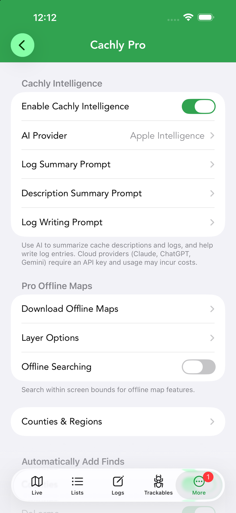
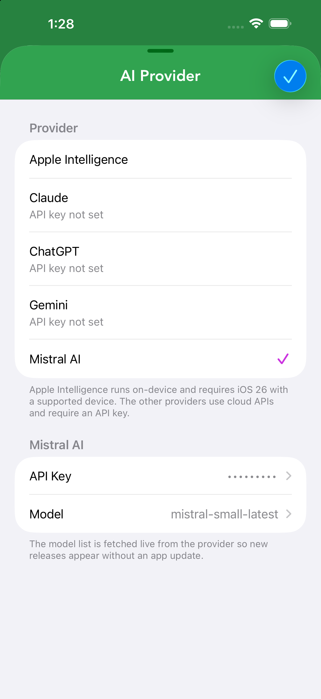
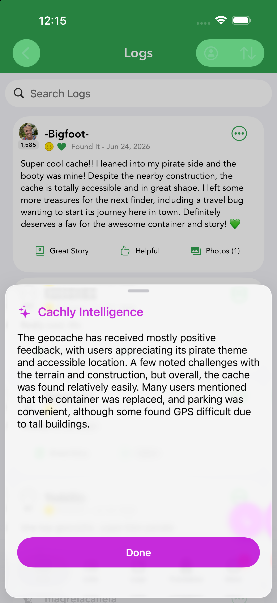
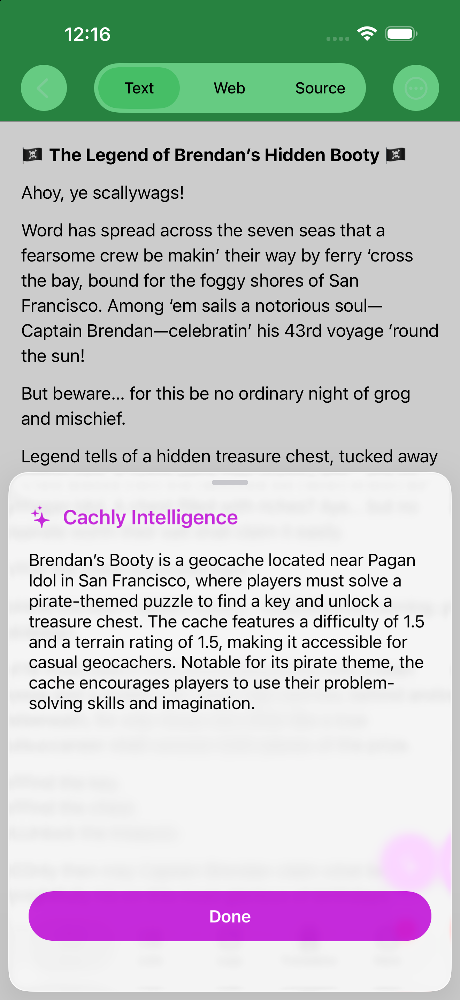
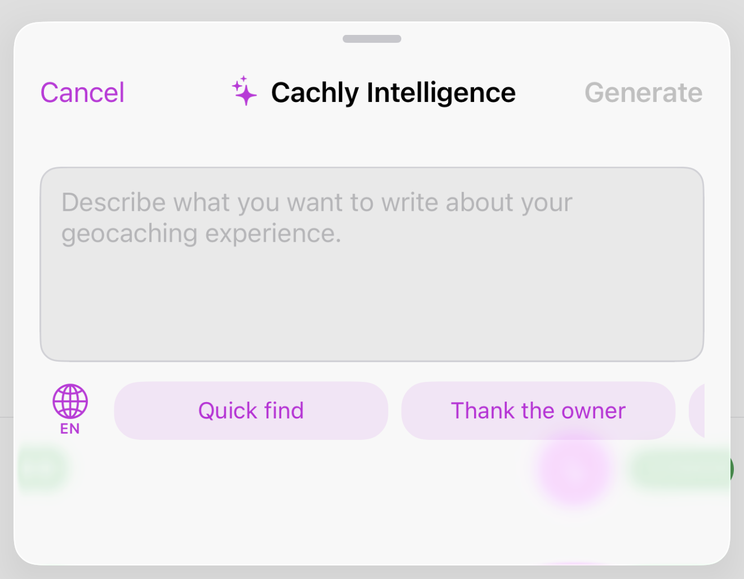
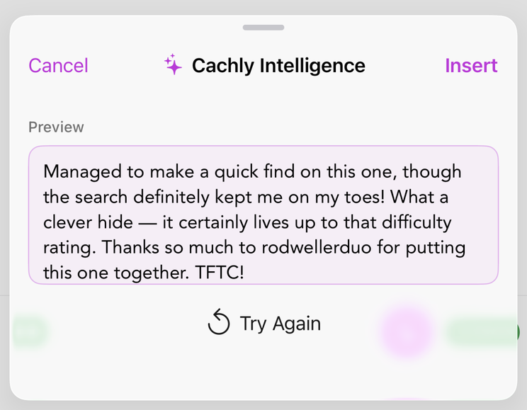

Cachly Intelligence
Cachly Intelligence helps you write better logs faster and read caches in any language, using on-device or cloud AI. You stay in control: it drafts, you edit and post.






What it does
When you’re logging a find, Cachly Intelligence can draft a log for you — turning a few notes (or just the cache’s context) into a friendly, well-written log you then tweak and submit. It’s designed to fix the TFTC problem, not to post on your behalf.
Turning it on
Everything lives at the top of Settings › Cachly Pro, in the Cachly Intelligence section:
- Switch on Enable Cachly Intelligence.
- Tap AI Provider and choose who does the thinking. Apple Intelligence works immediately, entirely on-device. For Claude, ChatGPT or Gemini, tap the provider to add your own API key first — until then the row shows API key not set.
- Optionally open the three prompt rows below (Log Summary, Description Summary, Log Writing) and tailor them to your taste — each is fully editable.
Once enabled, a sparkle button appears in the places Cachly Intelligence can help: a cache’s description, its logs list, and the log message editor.
AI summaries
Beyond drafting logs, Cachly Intelligence can summarize for you. On a cache’s Logs screen and on its description, tap the sparkle button (bottom right): a Cachly Intelligence sheet slides up with a concise summary — how the cache has been doing, common tips from finders, or the gist of a long pirate-themed backstory — without reading a wall of text.
In CarPlay, Cachly Intelligence goes hands-free: it can summarize a cache’s logs and description by voice, reading the summary aloud so you get the gist while driving.
Choosing a model
Cachly supports multiple AI providers, selectable under Settings › Cachly Pro › AI Provider:
| Provider | Notes |
|---|---|
| Apple Intelligence | On-device AI — private and offline-capable. Requires iOS 26 and an iPhone 15 Pro or newer. |
| Claude (Anthropic) | Cloud model via the Claude API. |
| ChatGPT (OpenAI) | Cloud model via the OpenAI API. |
| Google Gemini | Cloud model via Google. |
Writing prompts & the prompt editor
Every Cachly Intelligence feature is driven by a prompt you can see and change. Settings › Cachly Pro has three, and all three are fully user-editable:
- Log Summary Prompt — shapes how a cache’s logs are summarized; the logs are appended to the end of your prompt.
- Description Summary Prompt — shapes description summaries the same way.
- Log Writing Prompt — shapes generated logs; the cache’s info and your notes are appended to it.
Edit them to match your voice — always mention the trail, keep it short, write in your language — and the AI’s output follows.
Writing a log with AI
In the log message editor, tap the sparkle button and describe what you want to say (“Found it quickly, thank the owner, mention the nice park setting”). Tap Generate and a Preview of the drafted log appears — Insert it into your log, or Try Again for a different draft. Nothing is added until you choose Insert.
Privacy & control
Generated text is always a draft: nothing is posted until you review and submit it. You decide which provider to use, and you can edit or discard any suggestion.